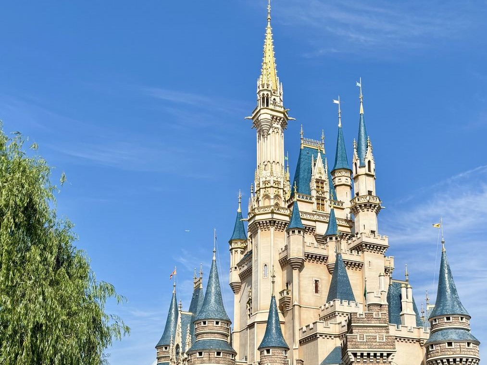
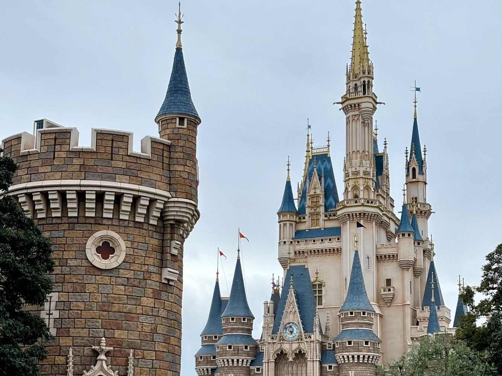
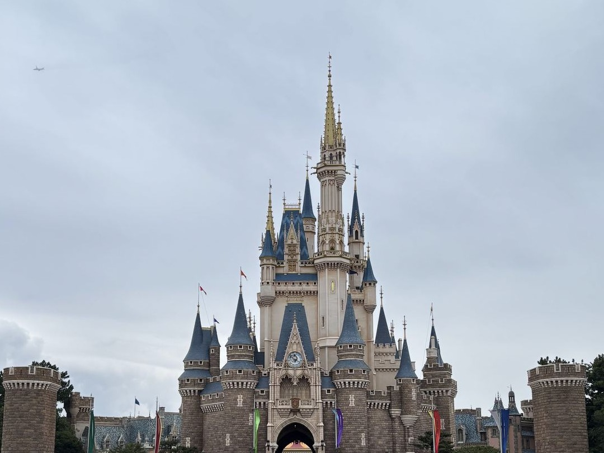
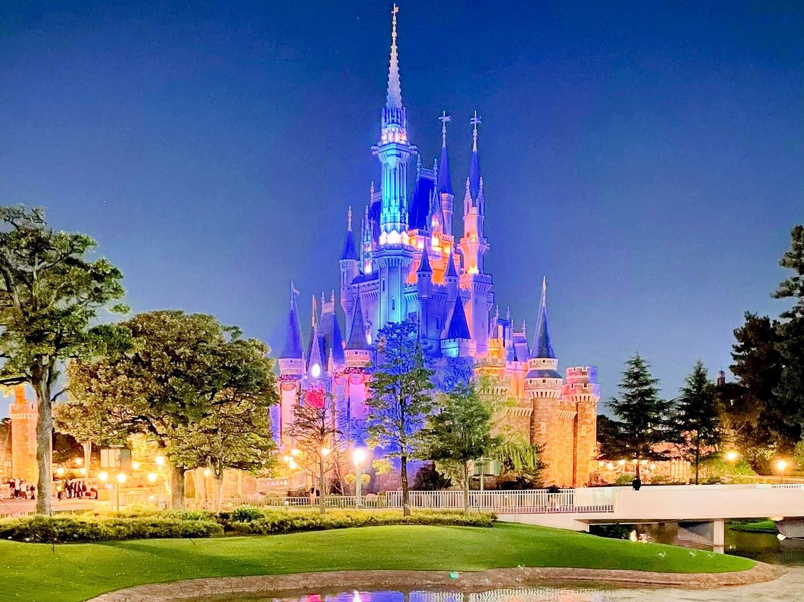
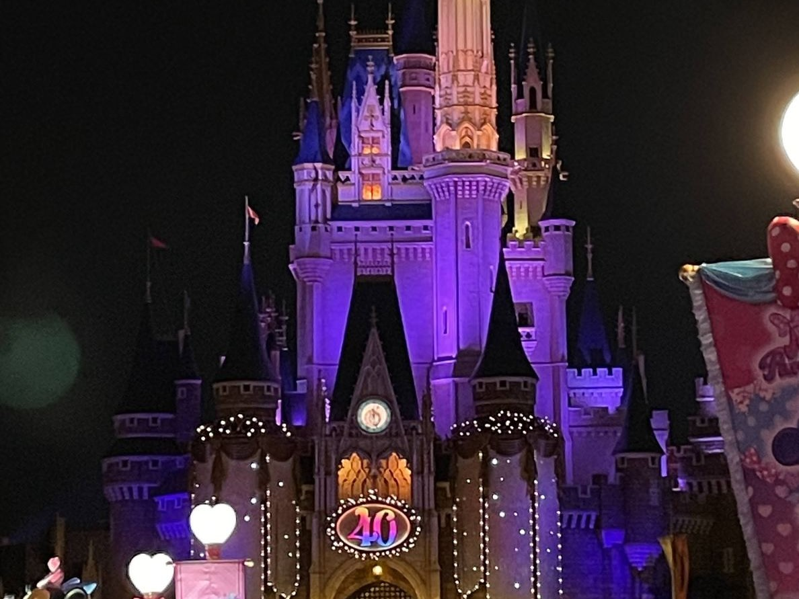
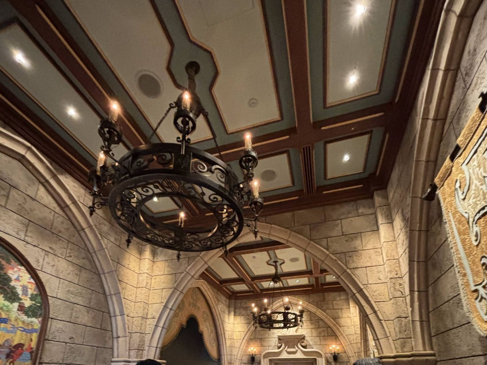
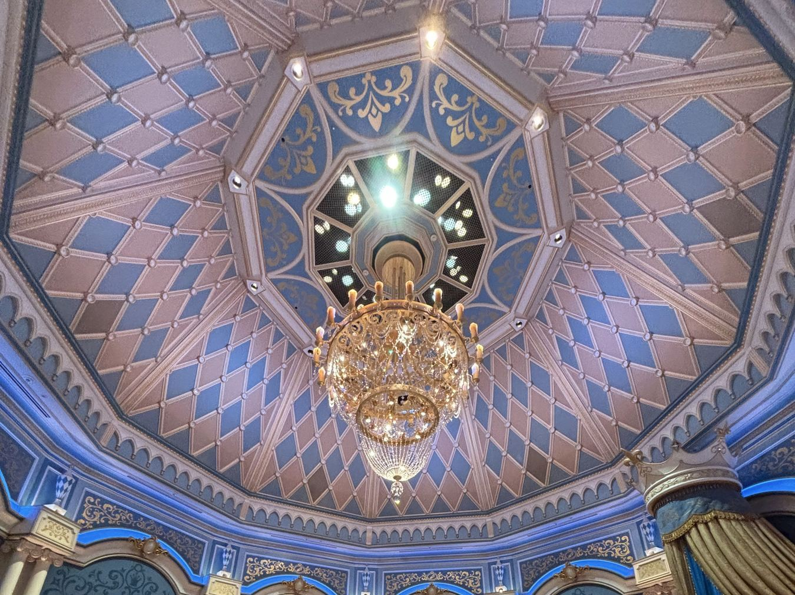

Cinderella Castle
時を刻む魔法と、青き尖塔のファンタジープラザの向こうで、青い尖塔が目印になります。堀のほとりから城壁を回り、ガラスの靴が待つ広間まで、シンデレラの城を歩きます。

I. 夢が現実になる場所
ワールドバザールを抜けると、屋根の向こうに見えていたシンデレラ城の塔が、青空を背に姿を現します。広場から城門へ歩くあいだにも、その輪郭は少しずつ変わっていきます。
遠くからひとつに見えた城に近づくと、城壁の石の色と、頭上の塔の色に違いが見えてきます。城門へと視線を誘うイマジニアの工夫は、この色の重なりにもあります。

II. 絵本の世界へ誘う色彩と「優しい配慮」
手前の城壁は重い石の色をしています。そこから上へ目を移していくと、塔の高いところは明るいクリーム色です。城を見上げた人に温かみが伝わる色合いです。
大規模な改修のあいだも、広場から見える城の姿には工夫がありました。外壁を覆った工事用シートには、向こうにあるはずの城がそっくり描かれていたのです。
🏰 【BGS Pick Up】城内レストラン計画とミステリーツアーの記憶
開園のころ、この城には豪華なレストランを設ける計画がありました。計画は実現に至らず、城の奥にはやがて「シンデレラ城ミステリーツアー」の冒険が待つようになります。
その後、城内にはシンデレラ自身の物語を紹介する「シンデレラのフェアリーテイル・ホール」が加わりました。
✦ 金色の塔に宿る、ウォルトの美学とファンのロマン
カリフォルニアの「眠れる森の美女の城」に小さな金色の塔が添えられた際、創始者ウォルト・ディズニーはそのデザインをとても気に入っていたという逸話があります。東京のシンデレラ城でも、ひときわ高くそびえる塔の頂に金色が使われています。
ファンの間では「空の上からパークを見守るウォルトが、自分のお城を見つけられるように」という温かなロマンが語り継がれています。そう信じて空に向かってそびえる金の塔を見上げると、その輝きがいっそう特別なものに感じられます。

III. 「空を近づける」視覚の魔法
プラザから尖塔を仰ぐと、ずいぶん高いところに窓が見えるでしょう。城壁を足元から順にたどると、その高さの感じ方には理由があることに気づきます。
ここには、上に行くほど窓や石垣、レンガのサイズを少しずつ小さく描いていく「強制遠近法」という視覚の魔法がかけられています。地上から見上げるゲストの瞳には、奥行き（パースペクティブ）が強調され、実際よりもはるかにスケールの大きな絵本の世界として映し出されるのです。工学的な現実を感じさせず、ただ物語としての純粋な美しさだけを伝える、イマジニアこだわりの技法です。

IV. 夜が魅せる、色とりどりのドレスアップ
日が落ちると、青い尖塔に灯りがともります。堀の縁で少し目を下げてみると、水面にも同じ尖塔が逆さに映っています。
夜の城には、季節や記念の年ごとに異なる色が重なります。周年を祝う金色の灯りに包まれることも、プロジェクションマッピングの映像が壁から塔へ広がることもあります。

V. お城の中に隠された、秘密の回廊と光のドーム
広場を離れて城内の回廊に入ると、石のアーチの下に静けさが広がります。
重厚な石造りのアーチに包まれた回廊のウェイティングスペース。頭上には、古い騎士たちの邸宅を思わせる、鉄細工の重厚で美しいシャンデリアが揺れています。その先に進むと、パステルブルーとゴールドの繊細な装飾で縁取られた八角形の高天井（ドーム）が現れ、まばゆいクリスタルのシャンデリアが空間全体に虹色の光の粒を優しく降らせています。そこにいるだけでプリンセスの優雅な余韻に浸れる、こだわり抜かれたロイヤルな空間デザインです。


VI. 王宮を訪れる人々
砦から王宮へ――一階と二階の違い
城の造りは、階ごとに性格が違います。城内でまず目に入るのは重厚な石壁で、一階には、外から城を守る砦としての性格があります。石造りの空間は装飾を抑え、堅牢さを感じさせます。しかし階を上がると、天井の高さやシャンデリア、壁面の装いが変わっていきます。
二階に広がるのは、王宮らしい優美な空間です。外敵から王家を守るための構造と、客人を迎えるための華やかさ。ひとつの城の中に、異なる二つの役割が収められています。尖塔を遠くから眺めるだけでは分からない、建物の内側にある表情です。
シンデレラが開いた、物語の広間
シンデレラは、自分が魔法に導かれてプリンセスになるまでの出来事を、多くの人々と分かち合いたいと考えました。そこで城内を開き、物語にまつわる美術作品を展示することにしました。
この広間が「シンデレラのフェアリーテイル・ホール」です。訪れた人々を案内していたのは、王宮に仕えるロイヤルアテンダントたちです。玉座や絵画、ステンドグラス、ガラスの靴が並ぶ室内は、王国の客人を迎える広間となりました。
城は、遠くから憧れるだけの場所ではなくなりました。シンデレラ自身が扉を開き、かつての出来事を人々に伝えようとしたのです。2011年4月15日に開かれたこの広間は、城内の歴史に新たな役割を加えました。2026年11月22日現在、フェアリーテイル・ホールは休止中です。
五枚のモザイク画が語る物語
城の玄関ホールから、ショップ「ガラスの靴」へ続くアーチ状の通路にも、物語が残されています。壁を飾るのは五枚のモザイク画。十万個以上のヴェネチアンガラスの小片を組み合わせ、シンデレラの運命が描かれています。
近くから見れば色の異なる小さなガラスが集まり、少し離れれば一つの場面になります。細かな光の粒が重なって生まれる絵は、舞踏会で彼女を包んだ魔法のきらめきにも似ています。買い物へ向かう短い通路が、王国の物語を読み解く回廊になっています。
残されたのは右足のガラスの靴
フェアリーテイル・ホールのショーケースには、ガラスの靴が片方、大切に飾られていました。展示されていたのは右足の靴です。舞踏会の夜にシンデレラが階段で落としたのは、左足の靴でした。
王子の使いがその靴を持って彼女の家を訪れたとき、継母のトレメイン夫人は左足の靴を壊してしまいます。しかし、シンデレラはもう片方の靴を持っていました。右足の靴は、彼女こそが王子の探していた相手であることを示す決め手となったのです。
展示されていた右足の靴は、単に美しい宝物ではありません。王子とシンデレラを再び結びつけた、物語の証でもあります。
VII. かつて城にあった、もう一つの冒険
シンデレラ城ミステリーツアー（1986年〜2006年）
かつて、城の内部には別の冒険への入口がありました。1986年7月11日に開業した「シンデレラ城ミステリーツアー」です。案内役とともに城内を巡るうち、華やかな王宮の奥から恐ろしい魔物たちの世界へと足を踏み入れてしまう、徒歩形式の探険でした。
冒険の終盤には、映画『コルドロン』に登場する魔王ホーンドキングが立ちはだかりました。参加者の中から選ばれた一人が光の剣を手に立ち向かい、魔王を退けると、勇者としてたたえられました。その証が「勇者のメダル」です。城を訪れた人自身が物語の登場人物になる仕組みでした。
このツアーは2006年4月5日をもって終了しました。それから五年後の2011年、城には、暗い冒険ではなく、シンデレラ自身が開いた物語の広間が加わります。同じ城の内部でも、託される役割は時代とともに変わってきました。
VIII. 世界のディズニー城 徹底比較
東京で見慣れた塔の形も、ほかの土地の城と並べると、その特徴がよくわかります。それぞれの城には、舞台となる物語や土地の光に合う色と形が選ばれました。
| パーク＆お城の名前 | 高さ | デザインコンセプト | 夢が息づく見どころ |
|---|---|---|---|
| 東京DL シンデレラ城 |
51 m | 青い尖塔と優しいクリームの色彩 映画『シンデレラ』より |
美しいガラスモザイクで描かれた物語の絵画と、野生のカルガモたちが憩う優美なお堀。 |
| マジックキングダム シンデレラ城 |
58 m | 童話の世界の完全なる再現 ディズニーファンタジーの総本山 |
城内に実在する王宮レストランや、限られたゲストしか入れない「秘密のスイートルーム」の伝説。 |
| ディズニーランド（CA） 眠れる森の美女の城 |
24 m | 初代パークの温かなシンボル 眠れる森の美女の物語 |
ウォルトとお城を創ったイマジニアたちが丹念に作り上げた、低めで温かみのある佇まい。 |
| ディズニーランド・パリ 眠れる森の美女の城 |
43 m | ヨーロッパの城郭文化への敬意 ピンク色の幻想的なシルエット |
らせん状に伸びる不思議な木々と純金の箔。地下深くには「巨大なドラゴン」の棲み処。 |
| 香港DL キャッスル・オブ・マジカル・ドリーム |
51 m | 12人のプリンセスたちの夢の融合 | それぞれのヒロインのモチーフがちりばめられた、形もカラーも異なる個性豊かな尖塔たち。 |
| 上海DL エンチャンテッド・ストーリーブック・キャッスル |
60 m | すべてのプリンセスの願いを象徴 | 最頂部で輝くゴールデン・ピオニー（牡丹）。城内を水流が通り抜けるボートアトラクション。 |
🌏 同じシンデレラ城なのに、なぜ印象が違うのか
東京とフロリダの「シンデレラ城」は同じ物語をモチーフにしながら、並べてみると明らかに色の雰囲気が異なります。違いは、各パークの配色と、それを照らす光が重なると、いっそうはっきり見えてきます。
フロリダの城には白やグレーの色が重なり、東京の城では柔らかなクリーム色と青い尖塔が目を引きます。日差しの強さや空の明るさによっても、同じ色の見え方は変わります。晴れた日の東京では、絵本から切り取ったような優しい印象が残ります。
この柔らかな印象は、東京のシンデレラ城を特徴づける要素のひとつです。色彩や輪郭の違いによって、同じシンデレラ城でもパークごとに異なる表情が生まれています。
IX. 堀を泳ぐカルガモと、お城が起こす小さな奇跡
堀の水面に城の影が揺れ、その上をカルガモが泳いでいくことがあります。城の仕掛けのひとつかと思うほど景色に溶け込んでいますが、ここを住みかに選んだ本物の鳥たちです。
お堀のほとりに響く笑い声や、城内の大広間に残る思い出。お城は、今この瞬間も、訪れるゲスト一人ひとりの「思い出」という名の魔法によって、きらきらと輝きを放ち続けています。
💙 キャストが紡ぐ、ガラスの靴のぬくもり
フェアリーテイル・ホールのガラスの靴や玉座の前には、シンデレラの物語に重ねて、それぞれの思い出をつくる人たちがいました。
かつてここでお互いに愛を誓い、プロポーズを成功させたカップルが、数年後に嬉しそうにお子様を連れて「また来たよ！」と報告に来てくれたり、ドレスを着てちょっぴり緊張している小さなプリンセスに、キャストがそっと優しくロイヤルなおもてなしを届けたり。シンデレラ城は、訪れる人それぞれの思い出や願いを受け止める場所として、パークの中心に佇んでいます。
参考資料（6件）
- 東京ディズニーリゾート「シンデレラのフェアリーテイル・ホール」（施設案内・休止情報）
- 東京ディズニーリゾート・ブログ「アトラクションキャストが教える！見どころ紹介～『シンデレラのフェアリーテイル・ホール』編～」（2021年2月15日）
- 東京ディズニーリゾート・ブログ「シンデレラが落としたガラスの靴は右足？左足？」（2019年2月20日）
- 東京ディズニーリゾート「ガラスの靴」（ショップ紹介）
- 東京ディズニーリゾート・ブログ「東京ディズニーリゾート～あの日の一枚～」（2013年10月30日）
- TDS・TDLの歴史資料「東京ディズニーリゾート 歴代アトラクション一覧」（二次資料）
資料確認日：2026年11月22日